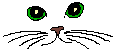
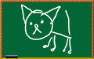
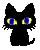
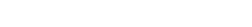

Analiza Popularności Języków Programowania
Analizujemy popularność języków programowania na podstawie liczby nowych repozytoriów na GitHubie w latach 2008-2025. Dane zostały zebrane z oficjalnego API GitHub i przedstawione w formie wykresu liniowego.




Źródła: Github API Tiobe Index